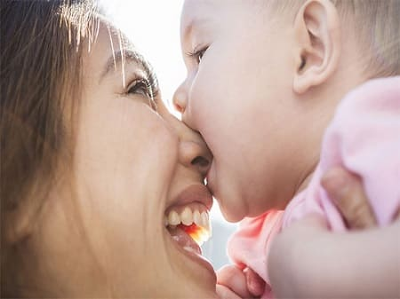
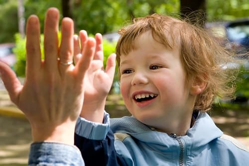

Родителей, естественно, беспокоит, почему их в остальном восхитительный ребенок кусает окружающих, которые о нем заботятся, или своих ровесников. Но постарайтесь не принимать такое досадное поведение, как укусы, удары и вопли, на свой счет. Щипки и шлепки, которым подвергается большинство родителей, — обычное поведение для ребенка, который не умеет говорить, чтобы сообщить о своих потребностях. И использует для этого руки и рот. Иногда эти щипки — элемент игры, в иных случаях за ними стоят реальные огорчения. Как только ребенок научится говорить и наберет достаточный словарный запас, чтобы сообщить о своих нуждах, это безобразие прекратится.
ЧТО ДЕЛАТЬ
Выясните, что служит спусковым механизмом. Что провоцирует щипок или удар? Может, ребенок устал, голоден, скучает или ему надоело слишком большое общество в слишком маленьком пространстве? Попытайтесь устранить спусковые механизмы, чтобы прекратить плохое поведение.
Объясняйте, играя. Расскажите и покажите своему малышу, что укусы неприятны. Мягко прижмите его предплечье к его зубам и покажите отметки от них на руке. Делайте это сразу после того, как он укусит вас — тогда он запомнит связь, и только как поучение, а не наказание. Вы же хотите ему показать: «Смотри, укусы неприятны!»
СОВЕТ ДОКТОРОВ СИРС: НЕ ИГНОРИРУЙТЕ! Хотя многие считают, что «если не обращать внимания, это пройдет» и это иногда работает, мы считаем, что родители должны помочь ребенку преодолеть такое поведение, показывая ему более приемлемые формы. Такой подход имеет два преимущества: он помогает вам творчески подойти к воспитанию и демонстрирует вашему ребенку, что вы — ценный ресурс, когда нужна помощь. Таким образом, он будет доверять вам и позже, когда ставки будут намного выше. |
Не кусайте его в ответ. Так часто советуют, но это неразумно, поскольку создает у ребенка представление, что кусаться — правильно: ведь так делают мама и папа, а все, что они делают, — хорошо.
Изолируйте его от других маленьких кусак. Ваш ребенок может перенимать такое плохое поведение в детском саду или от других малышей на детской площадке. По возможности ограничьте его контакты с такими детьми. Если ребенка часто кусают, бьют или орут на него, он может решить, что это нормальное поведение, и начать поступать так же.
Используйте альтернативные действия. Перенаправьте замах маленькой ручки в более приемлемое русло, например: «Дай пять!»

Сделайте перерыв. Если ребенок продолжает кусаться, несмотря на все предпринятые шаги, сделайте перерыв: прекратите игру с кусакой. В возрасте двух с половиной лет дети уже способны проследить связь между своими действиями и их последствиями.
Здоровье ребенка от докторов Сирс / Сирс У. и др.